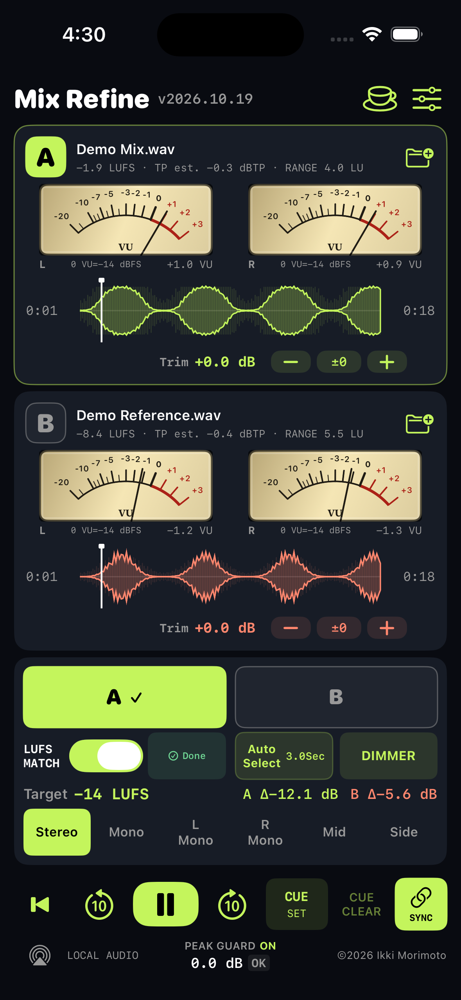

A / B
切り替えは、すぐに。
AとBをワンタップで切り替え。Auto Selectで一定間隔の自動切り替えもでき、独立したTrimで微調整できます。
A/B AUDIO COMPARISON · FOR iPHONE
自分のミックスとリファレンスを読み込み、LUFSで音量を揃えて聴き比べる。Mix Refineは、耳で判断するためのオーディオプレーヤーです。
WAV / AIFF / M4A / MP3 / FLAC
比較・再生・LUFS MATCHは無料。アプリ独自のアカウントは不要。

大きい音に引っ張られず、音の違いへ。
THE TOOLKIT
A / B
AとBをワンタップで切り替え。Auto Selectで一定間隔の自動切り替えもでき、独立したTrimで微調整できます。
LUFS MATCH
解析後、選んだTarget LUFSへ音量を合わせます。音量の印象とミックスの違いを、切り分けて聴くために。
VU / LUFS / TP
針式VUに加えて、LUFS、True Peak推定、RANGEを表示。VUの基準レベルも設定で調整できます。
STEREO / MONO / M / S
Stereo、Mono、L Mono、R Mono、Mid、Sideを切り替え、左右やセンター、広がりを確認できます。
CUE / SYNC
波形で移動し、Cueへ戻って比較。SYNCで再生位置を揃え、10秒スキップもすぐに操作できます。
FILES / BACKGROUND
iPhoneの「ファイル」から読み込み。iCloud DriveやDropboxなどにも対応し、バックグラウンドでの再生も続けられます。
FIRST LISTEN
各カードのフォルダーボタンから音源を選択。Aに自分のミックス、Bにリファレンスを入れると分かりやすく始められます。
準備ができた音源から再生できます。解析がDoneになったら、左下のLUFS MATCHをオンにしてみてください。
SettingのLUFS MATCHで目標値を調整し、A/Bを切り替えて比較します。まずは初期値の−14 LUFSから。
SET YOUR REFERENCE
LUFS MATCHの目標はSettingで変更できます。−14 / −16 / −24のプリセット、または−／＋で1 LUずつ調整。−25〜−1 LUFSの範囲で選べます。

LOCAL BY DESIGN
音声の準備・解析・再生は端末内で行います。Mix Refineは音源のアップロード先を運営せず、アプリに広告や第三者のアクセス解析SDKも入れていません。
データの取り扱いを見る →A LITTLE THANK-YOU
コーヒーマークから任意の買い切り支援ができます。支援後は配色・VU表示、メニューの並び替え、カスタム目標値やステレオスコープなどが表示されます。基本の比較機能は無料のままです。
購入・復元について →読み込み、音量合わせ、購入の復元。サポートページから確認できます。
サポートを見る →